משחקים — Minimax וגיזום אלפא-בטא
⏱ זמן משוער: 75 דק'
0. האינטואיציה — למה משחק הוא לא עוד בעיית חיפוש
עד עכשיו כל בעיה שפגשנו הייתה שלכם לבד: אתם בוחרים פעולה, העולם מגיב באופן צפוי (או שיש היריב, אבל אין), ואתם ממשיכים עד המטרה. משחק שובר את ההנחה הזו: זו סביבה תחרותית מרובת סוכנים, שבה כל פעולה של סוכן משפיעה על השני, והמטרות שלהם מתנגשות. בקורס נצטמצם למקרה הפרטי הכי נקי: שני שחקנים שמשחקים לסירוגין, בסביבה דטרמיניסטית וגלויה במלואה (אין קלפים מוסתרים, אין קוביות), ובמשחק סכום אפס — הרווח של צד אחד הוא בדיוק ההפסד של הצד השני, כך שכששחקן אחד "מרוויח" 1 השני "מרוויח" −1, וסכום הניקוד תמיד אפס.
למה זה משנה הכול? כי בבעיית חיפוש רגילה, אם האלגוריתם עובד בחצי מהיעילות האופטימלית — הוא סתם ימשיך קצת יותר זמן (ב-A* זה יעלה לכל היותר פי 2 בזמן עבודה). במשחק אין "עוד קצת זמן": יש יריב שמגיב לכל מהלך, וחצי-יעילות בשחמט כנראה תגרום להפסד. הפתרון של בעיית חיפוש הוא מסלול קבוע; הפתרון של משחק הוא אסטרטגיה — תשובה לכל מהלך אפשרי של היריב.
מקור: 10-games-part1.pdf (עמ' 4–9)
1. ניסוח משחק כבעיית חיפוש — עץ המשחק
המצב ההתחלתי ופונקציית העוקב, יחד, מגדירים עץ משחק: השורש הוא המצב ההתחלתי, ורמות העץ מתחלפות בין השחקנים — קוראים להם Max (משחק ראשון) ו- Min. בעלים — מצבי הסיום (TERMINAL) — יושבת פונקציית Utility, שתמיד מחושבת מנקודת המבט של Max: ערך גבוה טוב ל-Max, ערך נמוך רע לו (וטוב ל-Min, כי סכום אפס).
באיקס-עיגול (X הוא Max, כי הוא מתחיל): מצבי סיום מקבלים Utility = −1 אם O ניצח, 0 בתיקו, ו-+1 אם X ניצח.
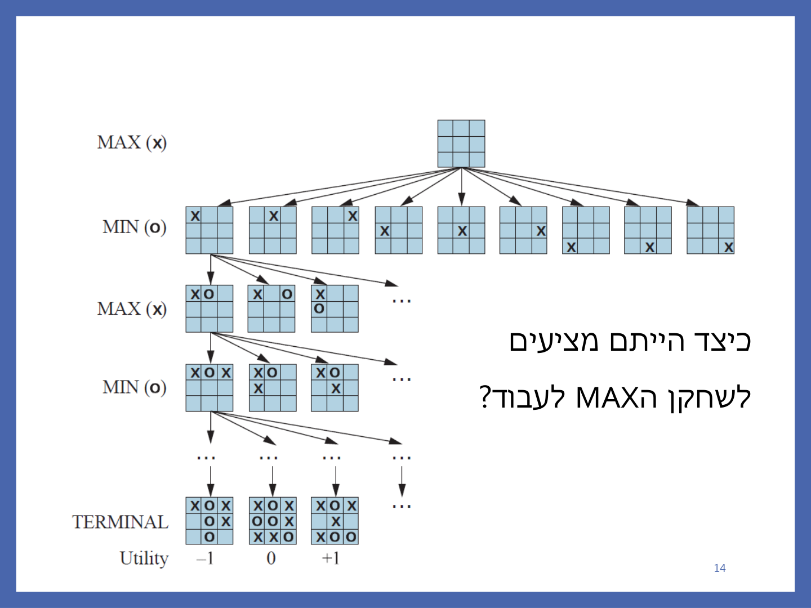
זו בדיוק אותה תבנית שראיתם כבר בניסוח פורמלי של בעיות חיפוש — רק שעכשיו יש שני "בעלים" לעץ לסירוגין. במבחנים אמיתיים נשאלה בדיוק השאלה הזו על איקס-עיגול: מצב כללי = מטריצה 3×3 שכל תא בה ∈ {X, O, B} (ריק); פונקציית העוקב = הצבת הסימן של השחקן שבתור באחת המשבצות הריקות; מבחן מטרה = יש שורה, עמודה או אלכסון עם שלושה סימנים זהים או שהלוח מלא (תיקו — המשחק מסתיים גם בלי מנצח); עלות צעד = 1 לכל הצבה. שימו לב: מבחן המטרה של איקס-עיגול לא שואל "מי ניצח" — הוא רק שואל "האם המשחק נגמר".
מקור: 10-games-part1.pdf (עמ' 1–14)
2. אלגוריתם Minimax — הרעיון, ההגדרה והפסאודו-קוד
הרעיון מאחורי Minimax: לבחור בכל צעד את המהלך שבו היריב יוכל לפגוע בכם הכי פחות — המהלך שערך ה-minimax value שלו הוא הגבוה ביותר. ההנחה המרכזית שעליה כל האלגוריתם בנוי: היריב משחק אופטימלית גם הוא. לכן Max ממקסם, אבל בכל צעד של Min — Min ימזער, כי הוא "עוין" את Max.
ההגדרה הרקורסיבית (מילה במילה מהמקור):
Minmax-value(n) =
utility(n) (n a final node)
max_{s successor of n} { minmax(s) } (n is a Max node)
min_{s successor of n} { minmax(s) } (n is a Min node)
כלומר: בעלה מחזירים את התועלת; בקודקוד Max לוקחים את המקסימום מבין ערכי הבנים; בקודקוד Min את המינימום. הפסאודו-קוד המלא מממש את זה בשתי פונקציות ברקורסיה הדדית:
MinmaxDecision(state)
{ val = MaxValue(state)
return the action in Successors(state) with value val
}
MaxValue(state)
{
if TerminalTest(state)
return Utility(state)
val = -∞
For all s in Successors(state)
val = max{ val, MaxValue(s) } // הקריאה ההדדית: לקודקוד Max קוראים ל-MinValue על הבן
val = max{ val, MinValue(s) }
Return val
}
MinValue(state)
{
if TerminalTest(state)
return Utility(state)
val = ∞
For all s in Successors(state)
val = min { val, MaxValue(s) } // הקריאה ההדדית: לקודקוד Min קוראים ל-MaxValue על הבן
Return val
}
MinmaxDecision מחזירה פעולה, לא ערך — היא קוראת ל- MaxValue על השורש (שהוא תמיד Max, כי Max משחק ראשון), ואז בוחרת מבין הבנים של השורש את זה שהערך שלו שווה לתוצאה. שימו לב גם: MinmaxDecision מתנהגת בדיוק כמו DFS רקורסיבי על העץ — רק שבכל קודקוד, במקום רק "לחזור", מבצעים חישוב min או max על מה שהקריאות הרקורסיביות מהבנים מחזירות.
מקור: 10-games-part1.pdf (עמ' 15–18)
3. הרצה מלאה — תרגיל הכיתה הקלאסי (עץ AIMA 5.2)
זה עץ המשחק שתחזרו אליו שוב ושוב במחברת: שורש A הוא Max, עם שלוש פעולות a1, a2, a3 לשלושה בני Min: B, C, D. לכל אחד משלושה עלים:
- B (דרך b1,b2,b3): עלים 3, 12, 8
- C (דרך c1,c2,c3): עלים 2, 4, 6
- D (דרך d1,d2,d3): עלים 14, 5, 2
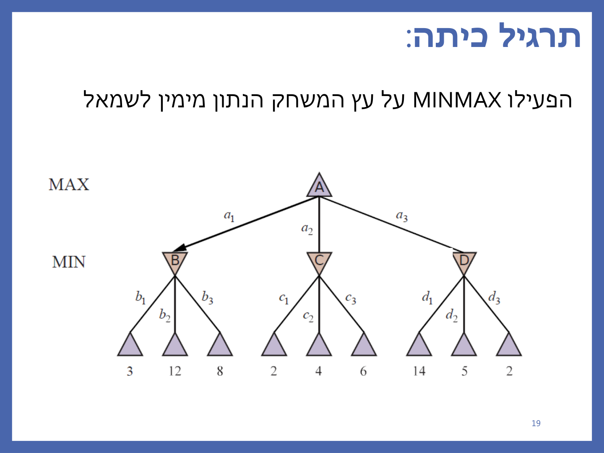
המרצה הריצה את האלגוריתם מימין לשמאל (כלומר בסדר פיתוח D → C → B). זכרו: הכיוון לא משנה את התוצאה — רק את סדר החישוב. הנה הריצה, קודקוד-קודקוד:
| קודקוד (Min) | חישוב v | ערך סופי | מוחזר ל-A דרך |
|---|---|---|---|
| D | ∞ → min(∞,2)=2 → min(2,5)=2 → min(2,14)=2 | 2 | a3 |
| C | ∞ → min(∞,6)=6 → min(6,4)=4 → min(4,2)=2 | 2 | a2 |
| B | ∞ → min(∞,8)=8 → min(8,12)=8 → min(8,3)=3 | 3 | a1 |
ועכשיו A (Max) ממקסם את מה שקיבל מבניו, בסדר שבו הם חזרו (D קודם, כי נבדק ראשון מימין לשמאל):
A: v = -∞ → max(-∞, 2) = 2 (מ-D, a3) → max(2, 2) = 2 (מ-C, a2) → max(2, 3) = 3 (מ-B, a1) Minimax(A) = 3 , הפעולה הנבחרת: a1 (מעבר ל-B)
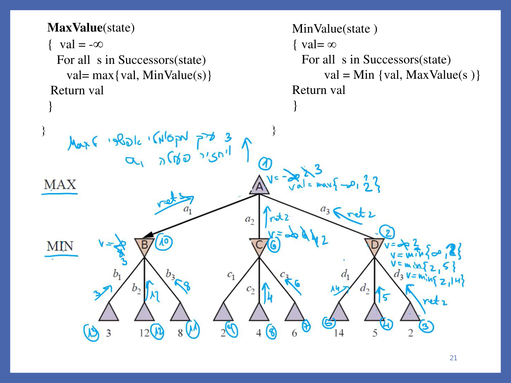
מקור: 10-games-part1.pdf (עמ' 19–21)
4. משחקים מרובי שחקנים — וקטור תועלת
מה קורה כשיש יותר משני שחקנים? אין יותר "מינימום" אחד ברור, כי כל שחקן רוצה למקסם רק את עצמו, לא בהכרח להזיק לשאר. הפתרון: בכל קודקוד בעץ המשחק שומרים וקטור תועלת ⟨VA, VB, VC⟩ — ערך מנקודת המבט של כל שחקן בו-זמנית. כשמגיעים לתורו של שחקן מסוים, הוא בוחר מבין בניו את זה שבו הרכיב שלו בווקטור הוא הגדול ביותר (אין יותר min — כל שחקן פשוט ממקסם את עצמו).
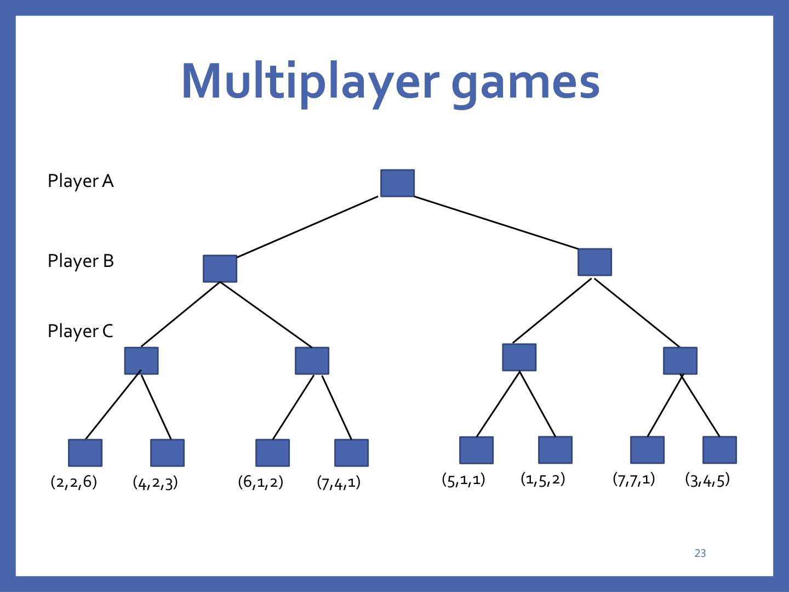
הרצה משמאל לימין על העץ (התהליך המלא, שלב אחר שלב):
- C השמאלי ביותר משווה (2,2,6) מול (4,2,3) לפי הרכיב שלו VC: 6 > 3 ⇒ נשאר (2,2,6).
- C השני משווה (6,1,2) מול (7,4,1) לפי VC: 2 > 1 ⇒ נשאר (6,1,2).
- B השמאלי משווה את שני הבנים לפי VB: (2,2,6) מול (6,1,2) ⇒ 2 > 1 ⇒ נשאר (2,2,6).
- C השלישי משווה (5,1,1) מול (1,5,2) לפי VC: 2 > 1 ⇒ מעדכן ל-(1,5,2).
- C הרביעי משווה (7,7,1) מול (3,4,5) לפי VC: 5 > 1 ⇒ מעדכן ל-(3,4,5).
- B הימני משווה (1,5,2) מול (3,4,5) לפי VB: 5 > 4 ⇒ נשאר (1,5,2).
- השורש A משווה (2,2,6) מול (1,5,2) לפי VA: 2 > 1 ⇒ A בוחר ללכת שמאלה.
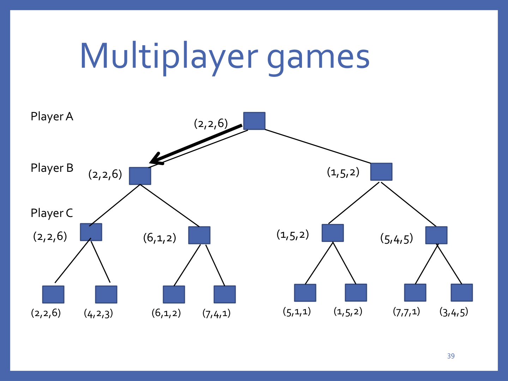
טקסט השקף המסכם (מודגש, באנגלית): "The algorithm returns maximal value 2 for A. Player A should go left."
מקור: 10-games-part1.pdf (עמ' 23–40)
5. תכונות וסיבוכיות של Minimax
אלגוריתם Minimax מתנהג בדיוק כמו DFS על עץ המשחק, ולכן יורש ממנו את התכונות: שלם (יגיע לכל עלה, אם העץ סופי), ו- אופטימלי בהנחה שהיריב משחק אופטימלית גם הוא — מרגע שהגענו לעלים, יודעים בדיוק מה יקרה בסוף המשחק.
הבעיה היא הסיבוכיות: O(bm) בזמן ו-O(bm) במקום (כמו DFS רגיל), כש-b הוא גורם ההסתעפות ו-m העומק המקסימלי. בשחמט b ≈ 35 ו-m ≈ 100 ל"משחק סביר" — פירוש הדבר שסריקת העץ עד הסוף היא בלתי אפשרית בפועל, מה שמוביל ישירות לשלוש דרכי שיפור (הסעיף הבא).
מקור: 10-games-part1.pdf (עמ' 22), 11-games-part2.pdf (עמ' 4–5)
6. שלוש דרכי שיפור ל-Minimax
אם אי-אפשר לסרוק את כל העץ, השאלה היא איך לחסוך בלי לוותר (יותר מדי) על איכות ההחלטה. שלוש הדרכים שמלמד הקורס:
- דרך א' — לגזום תתי-עצים שבוודאי לא ישפיעו על ההחלטה הסופית: זהו אלפא-בטא pruning, הנושא המרכזי של שאר הפרק.
- דרך ב' — לחסוך פיתוח מצבים חוזרים (Transposition Table).
- דרך ג' — לצמצם באופן מושכל את עץ המשחק (Imperfect Real-Time Decisions: cutoff + evaluation function).
מקור: 11-games-part2.pdf (עמ' 6)
7. גיזום α-β — ההגדרות, כללי הגיזום והפסאודו-קוד
הרעיון: להריץ בדיוק את אותה רקורסיה של Minimax, אבל לגזום, תוך כדי הריצה, ענפים שבוודאות לא ישפיעו על ההחלטה הסופית. בסדר בדיקה טוב, זה יכול לצמצם את החזקה b לכדי חצי ממה שהייתה.
ההגדרות (מילה במילה מהמקור):
- α — הערך הכי טוב (הכי גבוה) ש-Max ראה עד עכשיו לאורך המסלול מהשורש — נשמר בכל קודקוד Max.
- β — הערך הכי טוב (הכי נמוך) ש-Min ראה עד עכשיו לאורך המסלול — נשמר בכל קודקוד Min.
הפסאודו-קוד המלא:
AlphaBetaSearch(state) // α is best so far for Max
{ v = MaxValue(state, -∞ , ∞ ) // β is best so far for Min
return the action in Successors(state) with value v
}
MaxValue(state, α, β)
{
if TerminalTest(state)
return Utility(state)
val = -∞
For all s in Successors(state)
{ val = max{val, MinValue(s, α, β)}
α = max {α, val}
if α ≥ β return val
}
Return val
}
MinValue(state, α, β)
{
if TerminalTest(state)
return Utility(state)
val = ∞
For all s in Successors(state)
{ val = min{val, MaxValue(s, α, β)}
β = min { β, val }
if β ≤ α return val
}
Return val
}
זהה ל-Minimax כמעט מילה במילה — רק שכל קריאה נושאת איתה גם את α וגם את β, וכל קודקוד בודק, אחרי כל בן שהוא מעדכן ממנו, אם הגיע הרגע לעצור ולחזור מוקדם.
מקור: 11-games-part2.pdf (עמ' 7–17)
8. הרצה מלאה של α-β — אותו עץ, הפעם עם גיזום
הדוגמה הקלאסית של המרצה מריצה α-β על בדיוק אותו עץ מסעיף 3 (B: 3,12,8, C: 2,…, D: 14,5,2) — הפעם משמאל לימין, כדי להראות איפה בדיוק קורה הגיזום. שימו לב: התוצאה הסופית זהה (3), אבל הפעם לא כל העלים נבדקים.
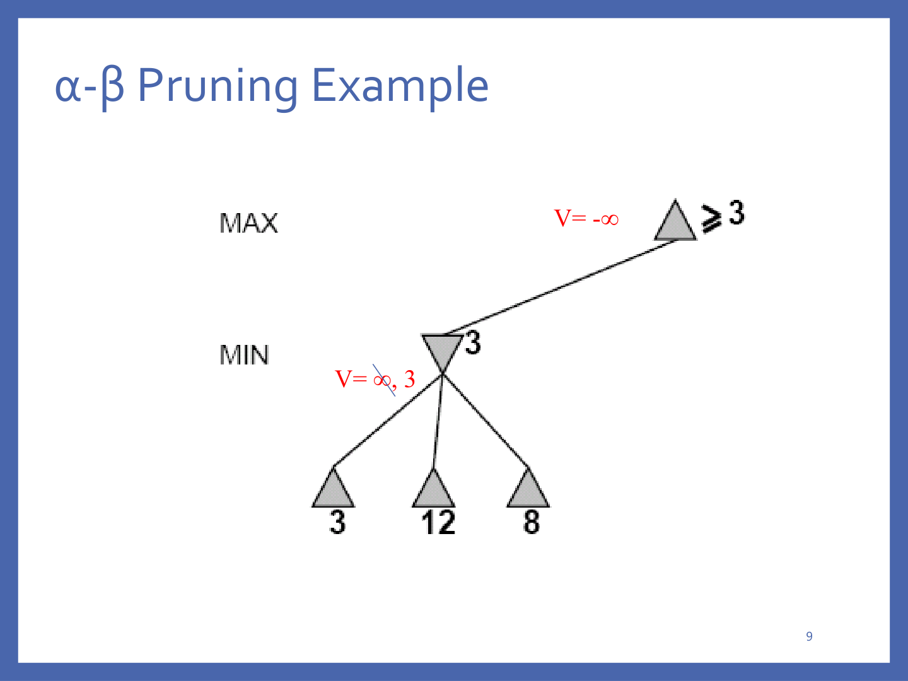
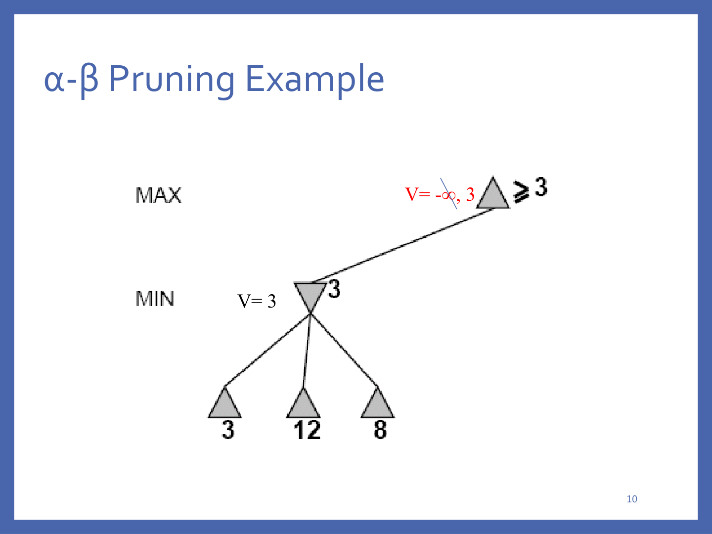
=3" loading="lazy">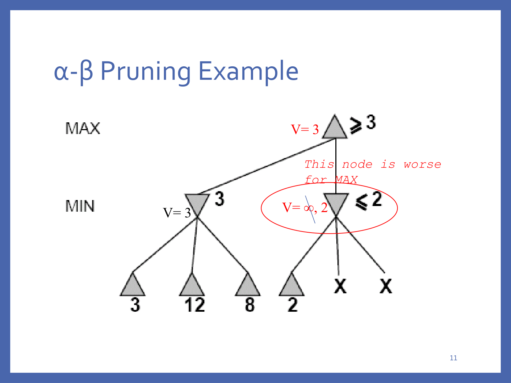
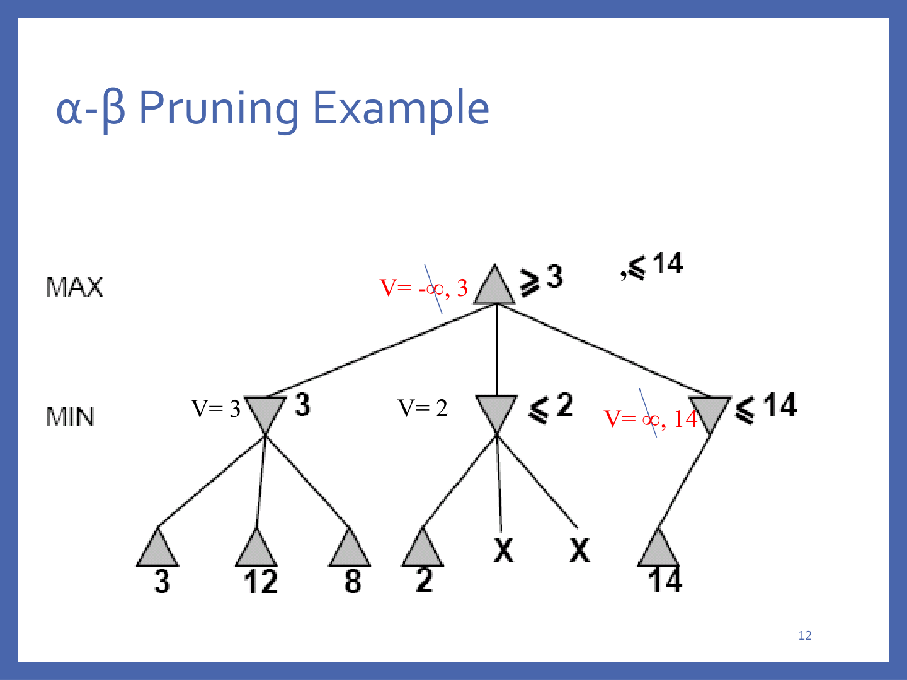
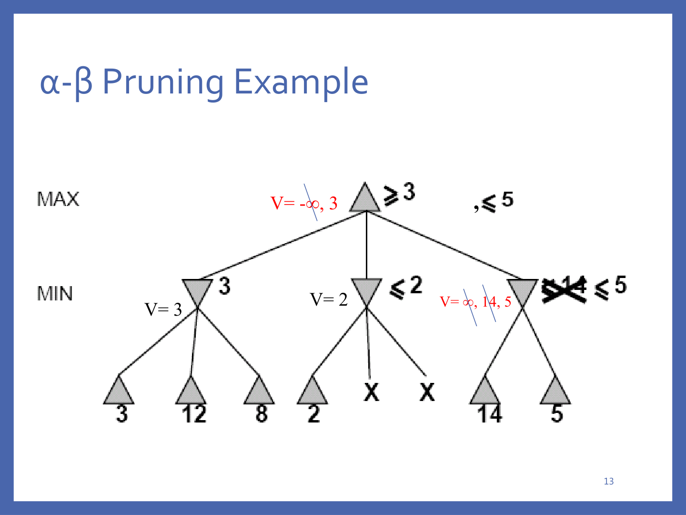
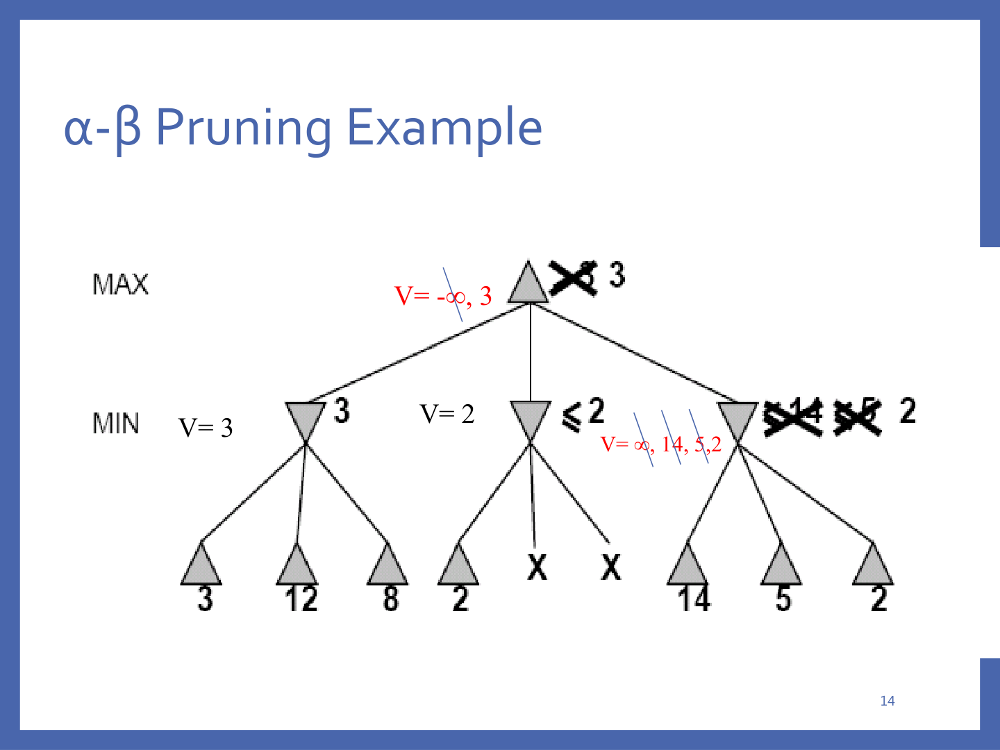
מקור: 11-games-part2.pdf (עמ' 9–15)
9. השפעת סדר הבדיקה — התרגיל המלא (עץ בן 26 קודקודים)
הדוגמה הקודמת קטנה מדי כדי להראות באמת כמה גיזום אפשר לחסוך. הנה עץ גדול יותר: שורש a (Max) עם שלושה בני Min b, c, d; b מסתעף לשלושה בני Max e, f, g; c לשניים h, i; d לשניים j, k; ולכל אחד מ-e עד k יש שני עלי-ערך (רמת Min סטטית):
e → L=7, M=6 f → N=8, O=5 g → P=2, Q=3 h → R=1, S=−2 i → T=6, U=2 j → V=5, W=13 k → X=9, Y=2
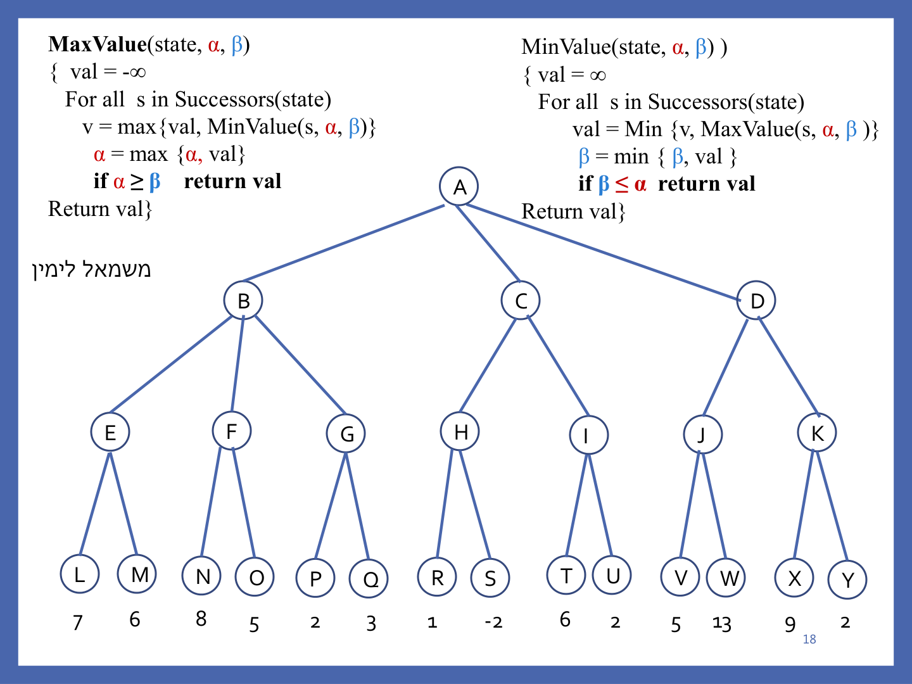
המרצה הריצה את התרגיל מימין לשמאל בכתב יד, עם כל עדכוני α/β. הנה השחזור המלא, שלב אחר שלב:
- a (Max): מתחיל α=−∞, β=∞.
- d (Min, נבדק ראשון): α=−∞, β=∞ (מ-a).
- k (Max, ימני של d, ראשון): Y=2 ⇒ v=2, α=2; X=9 ⇒ v=9, α=9. k מחזיר 9.
- d: v = min(∞,9) = 9, β = 9.
- j (Max, α=−∞ מ-a, β=9 מ-d): W=13 ⇒ v=13, α=13. בדיקה: α ≥ β? 13 ≥ 9 → כן! ⇒ גיזום מיידי — V לעולם לא נבדק. j מחזיר 13.
- d: v = min(9,13) = 9 (ללא שינוי). d מחזיר 9 ל-a. a: v = max(−∞,9) = 9, α = 9.
- c (Min, α=9 מ-a, β=∞): בודקת i ראשון — U=2 ⇒ v=2; T=6 ⇒ v=6. i מחזיר 6.
- c: v = min(∞,6) = 6, β = 6. בדיקה: β ≤ α? 6 ≤ 9 → כן! ⇒ גיזום מיידי — h כולו (R, S) לעולם לא נבדק. c מחזירה ≤6.
- a: v = max(9,6) = 9 (ללא שינוי).
- b (Min, α=9 מ-a, β=∞): בודקת g ראשון — Q=3 ⇒ v=3; P=2 ⇒ v=3 (ללא שינוי). g מחזיר 3.
- b: v = min(∞,3) = 3, β = 3. בדיקה: β ≤ α? 3 ≤ 9 → כן! ⇒ גיזום מיידי — f ו- e כולם (כל ארבעת העלים N,O,L,M) לעולם לא נבדקים. b מחזירה ≤3.
- a: v = max(9,3) = 9 (ללא שינוי) — אין עוד בנים. ערך סופי: a = 9, הפעולה הנבחרת: מעבר ל-d.
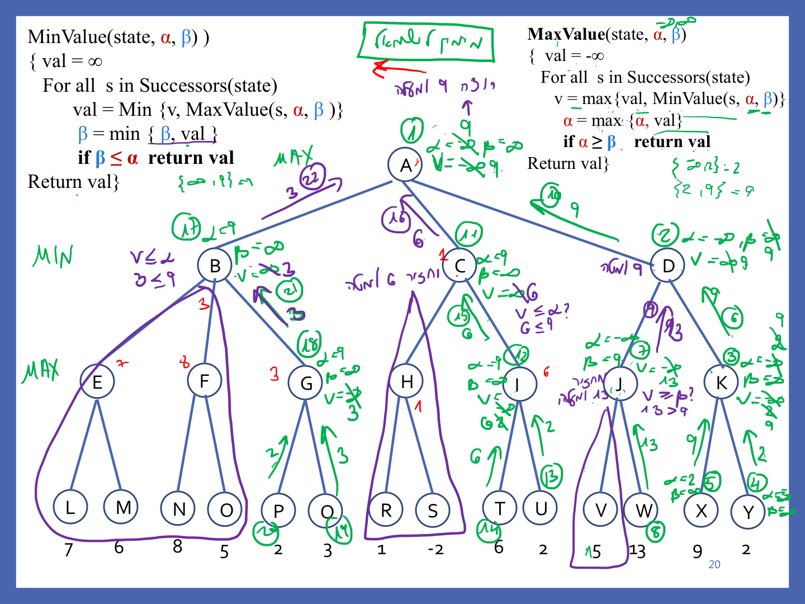
סה"כ נגזמו 7 מתוך 14 העלים (חצי מהעץ!) בריצה מימין לשמאל. השוו זאת לריצה משמאל לימין על אותו עץ בדיוק: שם b מקבל α=−∞ (במקום 9), כך ש-e נבדק במלואו (7,6 ⇒ 7), ורק f נגזם חלקית (N=8 ≥ β=7 ⇒ נגזם רק O), ו-g נבדק במלואו ומעדכן את b ל-3. בהמשך נגזם רק I כולו (T,U). סה"כ נגזמים שם 3 עלים בלבד מתוך 14 — התוצאה הסופית זהה (9, מהלך d), אבל הרבה פחות יעיל.
אם מצליחים לבדוק את הבנים בסדר מושלם (המהלך הטוב ביותר קודם) בכל קודקוד, סיבוכיות הזמן של α-β יורדת ל-O(bm/2) — כאילו אפשר לחפש לעומק כפול באותו זמן! בסדר רנדומלי מקבלים O(b3m/4) — עדיין שיפור על O(bm) של Minimax רגיל, אך פחות דרמטי.
| סדר בדיקה | סיבוכיות זמן |
|---|---|
| Minimax ללא גיזום | O(bm) |
| α-β, סדר רנדומלי | O(b3m/4) |
| α-β, סדר מושלם (הטוב ביותר קודם) | O(bm/2) |
מקור: 11-games-part2.pdf (עמ' 18–21)
10. שיפורים נוספים — טבלת גיבוב וחיתוך זמן-אמת
דרך ב' — Transposition Table: כמו בחיפושים רגילים, מצבים חוזרים יוצרים עבודה אקספוננציאלית מיותרת. במשחקים יש הרבה מצבים חוזרים (אותו לוח שחמט אפשר להגיע אליו בכמה סדרי מהלכים שונים) — לכן שומרים את ערך ה-minmax שכבר חושב בטבלת גיבוב, בפעם הראשונה שהוא חושב. הטבלה הזו מתפקדת בדיוק כמו closed list שהכרתם מחיפושים. כשיש מיליוני מצבים, לא ניתן לשמור הכול — יש אסטרטגיות לבחירת מי לשמור.
דרך ג' — Imperfect Real-Time Decisions: גם עם α-β, לפעמים עדיין צריך להגיע לעומק לא-מעשי כדי לקבל החלטה בזמן אמת. הפתרון: להחליף את TerminalTest + Utility ב- Cutoff(state) + Eval(state) — MinimaxCutoff זהה ל-MinimaxValue חוץ מהחלפה הזו:
if TerminalTest(state) ⟹ if Cutoff(state)
return Utility(state) return Eval(state)
פונקציית ההערכה (Eval) חייבת: (1) להיות מהירה לחישוב, ו-(2) להחזיר את ערך התועלת האמיתי במצבי סיום אמיתיים. רוב פונקציות ההערכה נותנות ציון משוקלל לתכונות של המצב:
Eval(s) = w1·f1(s) + w2·f2(s) + … + wn·fn(s)
לדוגמה בשחמט: w1 = 9 על f1 = (מספר מלכות לבנות) − (מספר מלכות שחורות), w2 = 1 על f2 = (מספר רגלים לבנים) − (מספר רגלים שחורים) — מלכה שווה בערך תשעה רגלים.
מתי חותכים? עומק קבוע מראש, או iterative deepening (מחזירים את הצעד שהוחלט ע"י החיפוש הכי עמוק שהספיקו), או single extension (כשיש מהלך אחד שבוודאות עדיף על כל השאר). חשוב לחתוך רק במצבים יציבים (לא באמצע רצף חילופים בשחמט, למשל) — אחרת פונקציית ההערכה עלולה לטעות כי המצב עומד להשתנות דרמטית.
מקור: 11-games-part2.pdf (עמ' 22–27)
11. משחקים בפועל — מה עובד בעולם האמיתי
השילוב של α-β + טבלת גיבוב + פונקציית הערכה טובה הוא לא רק תיאוריה — הוא מה שהביס אלופי עולם:
| משחק / מערכת | שנה | מה קרה |
|---|---|---|
| שחמט — Deep Blue (IBM) | 1997 | ניצחה את קספרוב 6 מערכות; 80 מעבדים, 126 מיליון קודקודים/שנייה, עד 30 ביליון מצבים לצעד, תמיד עומק 14, iterative deepening של α-β עם טבלת גיבוב, פונקציית הערכה עם 8000 תכונות — אפקט עומק כולל של 40. |
| דמקה — Chinook | 1994 | ניצחה את Marion Tinsley (אלוף 40 שנה) על PC רגיל, בעזרת α-β ובסיס נתוני-סיום מושלם של 444 ביליון מצבים (עד 8 כלים). |
| Go | — | גורם הסתעפות 361 — קשה במיוחד לחיפוש עמוק; נוצח שחקן מנוסה בעזרתה שיטות מתקדמות יותר. |
| רברסי (אותלו) — Logistelo | 1997 | רק 5–15 מהלכים חוקיים לרוב (מול ~35 בשחמט) — ניצחה את אלוף העולם. |
| שש-בש — TD-Gammon | 1992 | יש חוסר ודאות (קוביות) ⇒ חיפוש עמוק לא אפשרי; רשתות נוירונים + למידת חיזוק במקום זה, חיפוש של 2–3 רמות בלבד — בין 3 השחקנים הטובים בעולם. |
| פוקר — Libratus | 2017 | ניצחה 4 מקצוענים ב-120,000 ידיים של הדס-אפ נו-לימיט הולדם, בפער של 1.7 מיליון צ'יפים. |
מקור: 11-games-part2.pdf (עמ' 29–37)
12. מלכודות למבחן
- סיבוכיות Minimax היא O(bm), לא O(b·m)! זו חזקה, לא מכפלה — טעות נפוצה שקל ליפול בה בלחץ מבחן.
- כיוון הגיזום קל להפוך: קודקוד Min גוזם כש-val ≤ α של אביו ה-Max; קודקוד Max גוזם כש-val ≥ β של אביו ה-Min. אם מבלבלים ביניהם — כל התרגיל יוצא הפוך.
- סדר בדיקה משפיע על יעילות הגיזום, לא על נכונות התשובה — ראינו בתרגיל A-K שריצה בכיוון אחד גזמה 7 עלים והכיוון ההפוך רק 3, אבל שני הכיוונים החזירו את אותו ערך שורש (9).
- MinMax מתנהג כמו DFS (סורק רקורסיבית, מבצע min/max בכל קודקוד) — ניתן להרחיב אותו למשחקי מרובי-שחקנים בקלות: כל רמה פשוט ממקסמת את הרכיב של השחקן שתורו.
- מהמבחנים האמיתיים — חיבור בין נושאים: שאלה שלמה על משחק איקס-עיגול חוברה מארבעה חלקים שכל אחד מהם למדתם במודול אחר: (א) ניסוח פורמלי של המשחק כבעיית חיפוש (מצב כללי / עוקב / מבחן מטרה / עלות צעד — יחידה 2); (ב) הרצת BFS על עץ המשחק עד ניצחון X (יחידה 2); (ג) השאלה "האם X באמת ינצח אם משחקים Minimax?" — שדורשת לבדוק שגם היריב משחק אופטימלית, לא רק שקיים איזשהו מסלול לניצחון; (ד) שאלה נפרדת על אלגוריתם גנטי: "באילו שלבים יש רנדומיות?" — התשובה: בחירת ההורים לcrossover (לפי הסתברות מבוססת-כושר, לא חמדנית), מיקום נקודת החיתוך, האם תתבצע מוטציה, ומה תהיה המוטציה — כל זה כדי למנוע התכנסות מוקדמת ולשמר גיוון באוכלוסייה.
מקור: 10-games-part1.pdf, 11-games-part2.pdf
13. תרגיל הבית — תרגיל 7
הורדות: שאלת הבית (ex07.pdf) · הפתרון המלא (sol07.pdf).
שאלה 1 — נכון או לא נכון (MinMax ו-CSP)
נכון או לא נכון? חובה לנמק בקצרה.
- כשמפעילים את אלגוריתם MinMax בתחילת המשחק — אפשר לדעת כיצד יסתיים המשחק, בהנחה שהשחקנים מנסים לשחק באופן אופטימלי.
- ניתן לשנות את אלגוריתם MinMax שיעבוד גם בעץ משחק של מספר משתתפים.
- אלגוריתם MinMax מתנהג כמו DFS.
- כשפותרים בעיית סיפוק אילוצים, מתחילים מהשמה ריקה לכל המשתנים, בכל שיטות הפתרון.
א. נכון. אם מצליחים להגיע עד העלים ומתחשבים בדרך העבודה האופטימלית של היריב, יודעים מה הציון הטוב ביותר ש-MAX יכול לקבל בסיום — בהנחה ששני השחקנים אכן פועלים באופן אופטימלי.
ב. נכון. ניתן לשנות את האלגוריתם כך שבכל רמה יבחר את הערך הטוב ביותר לאותו שחקן שזו רמתו.
ג. נכון. הוא סורק את העץ באופן רקורסיבי כמו DFS, רק שבכל קודקוד מבצע חישוב מינימום או מקסימום על הערכים המוחזרים מהעוקבים שלו.
ד. לא נכון. באלגוריתם Backtracking אכן מתחילים עם השמה ריקה, אך כשפותרים עם חיפוש מקומי — אלגוריתם Min-Conflicts מתחיל מהשמה מלאה באופן רנדומלי.
שאלה 2 — הרצת MinMax מלאה על עץ משחק
עבור עץ המשחק הנתון (בו Max הוא השחקן הראשון והשחקנים מתחלפים לסירוגין): הראו כיצד ירוץ אלגוריתם MinMax כשעובדים משמאל לימין. יש להראות את התהליך כולו: ערכי V של כל קודקוד, מה מחזיר כל קודקוד להורה שלו, ומספור צעדי העבודה.
עץ המשחק (4 רמות: Max/Min/Max/Min):
a (Max)
├── b (Min) ├── e (Max) ├── A=4, B=4, C=7
│ ├── f (Max) ├── D=1, E=1, F=4
│ └── g (Max) ├── G=3, H=3, I=3
├── c (Min) ├── h (Max) ├── J=7, K=1, L=9
│ ├── i (Max) ├── M=4, N=1, O=7
│ └── j (Max) ├── P=4, Q=6, R=1
└── d (Min) ├── k (Max) ├── S=9, T=1, U=8
├── l (Max) ├── V=1, W=1, X=9
└── m (Max) ├── Y=0, Z=4, AA=9
סדר הצעדים: a(1) → b(2) → e(3) → A(4),B(5),C(6) → f(7) → D(8),E(9),F(10) → g(11) → G(12),H(13),I(14) → c(15) → h(16) → J(17),K(18),L(19) → i(20) → M(21),N(22),O(23) → j(24) → P(25),Q(26),R(27) → d(28) → k(29) → S(30),T(31),U(32) → l(33) → V(34),W(35),X(36) → m(37) → Y(38),Z(39),AA(40).
התפתחות ערכי V (קודקודי Max מתחילים מ--∞, קודקודי Min מ-+∞):
- e: -∞ → 4 → 4 → 7, מחזיר 7 ל-b
- f: -∞ → 1 → 1 → 4, מחזיר 4 ל-b
- g: -∞ → 3 → 3 → 3, מחזיר 3 ל-b
- b (Min): ∞ → 7 → 4 → 3, מחזיר 3 ל-a
- h: -∞ → 7 → 7 → 9, מחזיר 9 ל-c
- i: -∞ → 4 → 4 → 7, מחזיר 7 ל-c
- j: -∞ → 4 → 6 → 6, מחזיר 6 ל-c
- c (Min): ∞ → 9 → 7 → 6, מחזיר 6 ל-a
- k: -∞ → 9, מחזיר 9 ל-d
- l: -∞ → 1 → 1 → 9, מחזיר 9 ל-d
- m: -∞ → 0 → 4 → 9, מחזיר 9 ל-d
- d (Min): ∞ → 9 → 9 → 9, מחזיר 9 ל-a
- a (Max): -∞ → 3 → 6 → 9
מסקנה: שחקן MAX יבחר לבצע את הפעולה המובילה ל-d, כי היא נותנת לו את הציון המקסימלי האפשרי — 9.
תרגילים לא להגשה — נכון או לא נכון? יש לנמק בקצרה.
- פתרון בעיית סיפוק אילוצים ע"י חיפוש מקומי תמיד עדיף על פני Backtracking.
- לכל בעיית סיפוק אילוצים צריך פונקציה היוריסטית אחרת כדי להשתמש בחיפוש מקומי.
- כשצריך לשנות השמה של פתרון סיפוק אילוצים, בשל שינוי של חלק מהאילוצים, תמיד עדיף לעבוד עם חיפוש מקומי מאשר עם Backtracking.
א. לא נכון. חיפוש מקומי לא תמיד מחזיר פתרון גם כשיש פתרון, כי הוא עלול להגיע למקסימום מקומי בו לא מתקיימים כל האילוצים.
ב. לא נכון. הפונקציה ההיוריסטית קבועה בסיפוק אילוצים — מספר האילוצים שאינם מסופקים, אותה פונקציה לכל בעיית CSP.
ג. נכון. חיפוש מקומי מתחיל מהמצב הקיים ומנסה לשפרו, לעומת Backtracking שעלול לרדת הרבה רמות אחורה בעץ ההשמות כדי לשנות הצבה ולראות משם כיצד לתת ערכים לשאר המשתנים.
מקור: ex07.pdf, sol07.pdf
14. בדיקה עצמית
בעץ תרגיל הכיתה (A שורש MAX; B: 3,12,8; C: 2,4,6; D: 14,5,2), מהו ערך Minimax(A) ואיזו פעולה נבחרת?
במשחק תלת-שחקני עם וקטור תועלת ⟨VA,VB,VC⟩ בכל קודקוד, איך שחקן B בוחר את הצעד הבא שלו?
בדוגמת ה-α-β הקלאסית (MIN שמאלי=3; MIN אמצעי מתחיל בעלה 2; MIN ימני 14,5,2), כמה מעלי ה-MIN האמצעי נבדקים בפועל לפני שהענף נגזם?
מתי בדיוק קודקוד Min גוזם את יתר צאצאיו באלגוריתם α-β?
מהי סיבוכיות הזמן של α-β pruning כשמצליחים לבדוק את הצאצאים בסדר מושלם (המהלך הטוב ביותר קודם) בכל קודקוד?
נכון או לא נכון: "אלגוריתם α-β תמיד מחזיר בדיוק אותה תוצאה כמו Minimax המלא"?
שאלת מבחן: מריצים BFS על עץ המשחק של איקס-עיגול עד שנמצא לוח שבו X ניצח, ואז שואלים "האם X יכול לנצח לפי Minmax?" מדוע זו שאלה נפרדת מ-BFS, ולא אותה תשובה אוטומטית?
באילו שלבים של אלגוריתם גנטי מעורבת רנדומיות/הסתברות (ולא בחירה חמדנית)?
סיימתם את הפרק? סמנו אותו כהושלם: